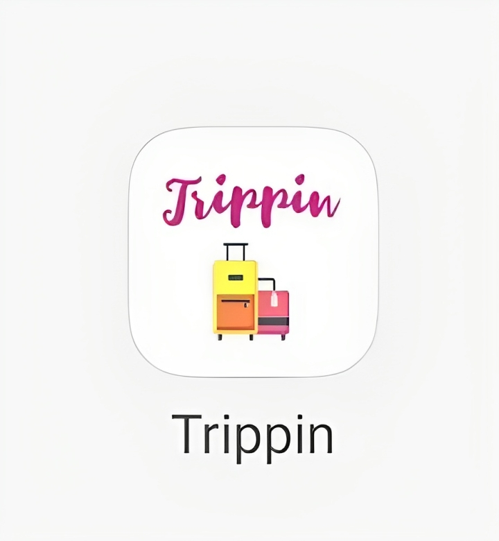
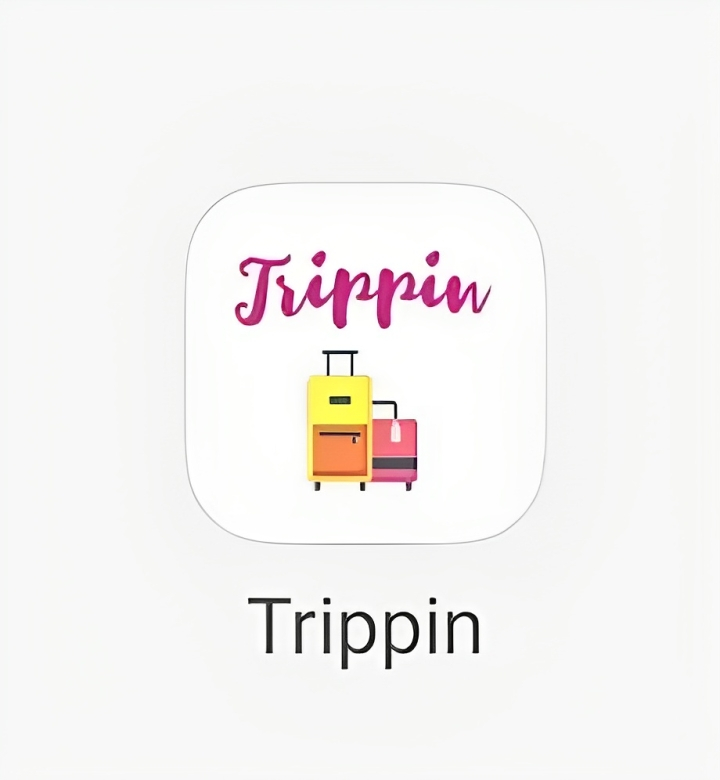

The project provides information on Internet of Things (IoT) devices, tierless
programming ideas, distributed applications, and the advantages of using a
tierless approach, including better architecture and maintenance, by making it
easier to design modular, less repetitive code, that can be easily changed and
modified according to the programmer’s needs.
 

Trippin is an innovative Android application that embodies the perfect blend
of technology and wanderlust. With expertise in Android Programming, Java,
Google Firebase, and Google Maps API, we've crafted a seamless platform that
empowers travelers like you to explore the world with ease.

Here I regularly share various data structure problems which includes Stacks, Linked Lists, Queue, Trees, Dynamic Programming, and more.
Have a look!
Global COVID-19 Tracker provides insights to the trends and patterns of the
pandemic through visualisations like Choropleth, Treemap, Sunburst and
Bar Chart. Users can perform several actions while exploring this
Covid-19 Tracker by conducting statistical analysis using interactive
visualisations.

This project explores and analyses the reviews of various food items from amazon for last 10 years
to generate insights and allow system to make swift identification of
favourable and unfavourable reviews.
The aim of this application is to provide a simple and easy application to
the customers where they can rent a vehicle, help operators to track
vehicles, check availability, defects and vehicle movements across cities.
It visualizes all activities helping managers in effortless vehicle
tracking.

Introducing our Big Data Application, a tech marvel powered by Spark, GitLab,
Java, and expert knowledge in Big Data and Hadoop. This application is
designed to transform how you handle vast datasets. With the ability to efficiently
sift through over 6 million documents in under 3 minutes, our unique filtering
mechanism, driven by user queries, redefines data management. Welcome to a future
where Big Data isn't a challenge but an opportunity. Welcome to innovation,
efficiency, and boundless insights.